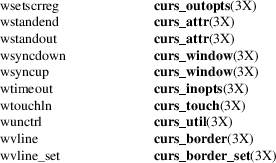

ncurses − CRT screen handling and optimization package
#include <curses.h>
The ncurses library routines give the user a terminal-independent method of updating character screens with reasonable optimization. This implementation is “new curses” (ncurses) and is the approved replacement for 4.4BSD classic curses, which has been discontinued. This describes ncurses version 6.4 (patch 20221231).
The ncurses library emulates the curses library of System V Release 4 UNIX, and XPG4 (X/Open Portability Guide) curses (also known as XSI curses). XSI stands for X/Open System Interfaces Extension. The ncurses library is freely redistributable in source form. Differences from the SVr4 curses are summarized under the EXTENSIONS and PORTABILITY sections below and described in detail in the respective EXTENSIONS, PORTABILITY and BUGS sections of individual man pages.
The ncurses library also provides many useful extensions, i.e., features which cannot be implemented by a simple add-on library but which require access to the internals of the library.
A program using these routines must be linked with the −lncurses option, or (if it has been generated) with the debugging library −lncurses_g. (Your system integrator may also have installed these libraries under the names −lcurses and −lcurses_g.) The ncurses_g library generates trace logs (in a file called “trace” in the current directory) that describe curses actions. See also the section on ALTERNATE CONFIGURATIONS.
The ncurses package supports: overall screen, window and pad manipulation; output to windows and pads; reading terminal input; control over terminal and curses input and output options; environment query routines; color manipulation; use of soft label keys; terminfo capabilities; and access to low-level terminal-manipulation routines.
Initialization
The library uses the locale which the calling program has
initialized. That is normally done with
setlocale(3):
setlocale(LC_ALL, "");
If the locale is not initialized, the library assumes that characters are printable as in ISO−8859−1, to work with certain legacy programs. You should initialize the locale and not rely on specific details of the library when the locale has not been setup.
The function initscr or newterm must be called to initialize the library before any of the other routines that deal with windows and screens are used. The routine endwin(3X) must be called before exiting.
To get character-at-a-time input without echoing (most interactive, screen oriented programs want this), the following sequence should be used:
initscr(); cbreak(); noecho();
Most programs would additionally use the sequence:
intrflush(stdscr,
FALSE);
keypad(stdscr, TRUE);
Before a curses program is run, the tab stops of the terminal should be set and its initialization strings, if defined, must be output. This can be done by executing the tput init command after the shell environment variable TERM has been exported. tset(1) is usually responsible for doing this. [See terminfo(5) for further details.]
Datatypes
The ncurses library permits manipulation of data
structures, called windows, which can be thought of
as two-dimensional arrays of characters representing all or
part of a CRT screen. A default window called stdscr,
which is the size of the terminal screen, is supplied.
Others may be created with newwin.
Note that curses does not handle overlapping windows, that’s done by the panel(3X) library. This means that you can either use stdscr or divide the screen into tiled windows and not using stdscr at all. Mixing the two will result in unpredictable, and undesired, effects.
Windows are referred to by variables declared as WINDOW *. These data structures are manipulated with routines described here and elsewhere in the ncurses manual pages. Among those, the most basic routines are move and addch. More general versions of these routines are included with names beginning with w, allowing the user to specify a window. The routines not beginning with w affect stdscr.
After using routines to manipulate a window, refresh(3X) is called, telling curses to make the user’s CRT screen look like stdscr. The characters in a window are actually of type chtype, (character and attribute data) so that other information about the character may also be stored with each character.
Special windows called pads may also be manipulated. These are windows which are not constrained to the size of the screen and whose contents need not be completely displayed. See curs_pad(3X) for more information.
In addition to drawing characters on the screen, video attributes and colors may be supported, causing the characters to show up in such modes as underlined, in reverse video, or in color on terminals that support such display enhancements. Line drawing characters may be specified to be output. On input, curses is also able to translate arrow and function keys that transmit escape sequences into single values. The video attributes, line drawing characters, and input values use names, defined in <curses.h>, such as A_REVERSE, ACS_HLINE, and KEY_LEFT.
Environment
variables
If the environment variables LINES and COLUMNS
are set, or if the program is executing in a window
environment, line and column information in the environment
will override information read by terminfo. This
would affect a program running in an AT&T 630 layer, for
example, where the size of a screen is changeable (see
ENVIRONMENT).
If the environment variable TERMINFO is defined, any program using curses checks for a local terminal definition before checking in the standard place. For example, if TERM is set to att4424, then the compiled terminal definition is found in
/usr/share/terminfo/a/att4424.
(The a is copied from the first letter of att4424 to avoid creation of huge directories.) However, if TERMINFO is set to $HOME/myterms, curses first checks
$HOME/myterms/a/att4424,
and if that fails, it then checks
/usr/share/terminfo/a/att4424.
This is useful for developing experimental definitions or when write permission in /usr/share/terminfo is not available.
The integer variables LINES and COLS are defined in <curses.h> and will be filled in by initscr with the size of the screen. The constants TRUE and FALSE have the values 1 and 0, respectively.
The curses routines also define the WINDOW * variable curscr which is used for certain low-level operations like clearing and redrawing a screen containing garbage. The curscr can be used in only a few routines.
Routine and
Argument Names
Many curses routines have two or more versions. The
routines prefixed with w require a window argument.
The routines prefixed with p require a pad argument.
Those without a prefix generally use stdscr.
The routines prefixed with mv require a y and x coordinate to move to before performing the appropriate action. The mv routines imply a call to move before the call to the other routine. The coordinate y always refers to the row (of the window), and x always refers to the column. The upper left-hand corner is always (0,0), not (1,1).
The routines prefixed with mvw take both a window argument and x and y coordinates. The window argument is always specified before the coordinates.
In each case, win is the window affected, and pad is the pad affected; win and pad are always pointers to type WINDOW.
Option setting routines require a Boolean flag bf with the value TRUE or FALSE; bf is always of type bool. Most of the data types used in the library routines, such as WINDOW, SCREEN, bool, and chtype are defined in <curses.h>. Types used for the terminfo routines such as TERMINAL are defined in <term.h>.
This manual page describes functions which may appear in any configuration of the library. There are two common configurations of the library:
ncurses
the “normal” library, which handles 8-bit characters. The normal (8-bit) library stores characters combined with attributes in chtype data.
Attributes alone (no corresponding character) may be stored in chtype or the equivalent attr_t data. In either case, the data is stored in something like an integer.
Each cell (row and column) in a WINDOW is stored as a chtype.
ncursesw
the so-called
“wide” library, which handles multibyte
characters (see the section on ALTERNATE
CONFIGURATIONS). The “wide” library includes
all of the calls from the “normal” library. It
adds about one third more calls using data types which store
multibyte characters:
cchar_t
corresponds to chtype. However it is a structure, because more data is stored than can fit into an integer. The characters are large enough to require a full integer value − and there may be more than one character per cell. The video attributes and color are stored in separate fields of the structure.
Each cell (row and column) in a WINDOW is stored as a cchar_t.
The setcchar(3X) and getcchar(3X) functions store and retrieve the data from a cchar_t structure.
wchar_t
stores a “wide” character. Like chtype, this may be an integer.
wint_t
stores a wchar_t or WEOF − not the same, though both may have the same size.
The “wide” library provides new functions which are analogous to functions in the “normal” library. There is a naming convention which relates many of the normal/wide variants: a “_w” is inserted into the name. For example, waddch becomes wadd_wch.
Routine Name
Index
The following table lists the curses routines
provided in the “normal” and “wide”
libraries and the names of the manual pages on which they
are described. Routines flagged with “*” are
ncurses-specific, not described by XPG4 or present in
SVr4.

Depending on the configuration, additional sets of functions may be available:
curs_memleaks(3X) -
curses memory-leak checking
curs_sp_funcs(3X) - curses screen-pointer extension
curs_threads(3X) - curses thread support
curs_trace(3X) - curses debugging routines
Routines that return an integer return ERR upon failure and an integer value other than ERR upon successful completion, unless otherwise noted in the routine descriptions.
As a general rule, routines check for null pointers passed as parameters, and handle this as an error.
All macros return the value of the w version, except setscrreg, wsetscrreg, getyx, getbegyx, and getmaxyx. The return values of setscrreg, wsetscrreg, getyx, getbegyx, and getmaxyx are undefined (i.e., these should not be used as the right-hand side of assignment statements).
Functions with a “mv” prefix first perform a cursor movement using wmove, and return an error if the position is outside the window, or if the window pointer is null. Most “mv”-prefixed functions (except variadic functions such as mvprintw) are provided both as macros and functions.
Routines that return pointers return NULL on error.
The following environment symbols are useful for customizing the runtime behavior of the ncurses library. The most important ones have been already discussed in detail.
CC
command-character
When set, change occurrences of the command_character (i.e.,
the cmdch capability) of the loaded terminfo entries
to the value of this variable. Very few terminfo entries
provide this feature.
Because this name is also used in development environments to represent the C compiler’s name, ncurses ignores it if it does not happen to be a single character.
BAUDRATE
The debugging library checks this environment variable when
the application has redirected output to a file. The
variable’s numeric value is used for the baudrate. If
no value is found, ncurses uses 9600. This allows
testers to construct repeatable test-cases that take into
account costs that depend on baudrate.
COLUMNS
Specify the width of the screen in characters. Applications
running in a windowing environment usually are able to
obtain the width of the window in which they are executing.
If neither the COLUMNS value nor the terminal’s
screen size is available, ncurses uses the size which
may be specified in the terminfo database (i.e., the
cols capability).
It is important that your application use a correct size for the screen. This is not always possible because your application may be running on a host which does not honor NAWS (Negotiations About Window Size), or because you are temporarily running as another user. However, setting COLUMNS and/or LINES overrides the library’s use of the screen size obtained from the operating system.
Either COLUMNS or LINES symbols may be specified independently. This is mainly useful to circumvent legacy misfeatures of terminal descriptions, e.g., xterm which commonly specifies a 65 line screen. For best results, lines and cols should not be specified in a terminal description for terminals which are run as emulations.
Use the use_env function to disable all use of external environment (but not including system calls) to determine the screen size. Use the use_tioctl function to update COLUMNS or LINES to match the screen size obtained from system calls or the terminal database.
ESCDELAY
Specifies the total time, in milliseconds, for which ncurses
will await a character sequence, e.g., a function key. The
default value, 1000 milliseconds, is enough for most uses.
However, it is made a variable to accommodate unusual
applications.
The most common instance where you may wish to change this value is to work with slow hosts, e.g., running on a network. If the host cannot read characters rapidly enough, it will have the same effect as if the terminal did not send characters rapidly enough. The library will still see a timeout.
Note that xterm mouse events are built up from character sequences received from the xterm. If your application makes heavy use of multiple-clicking, you may wish to lengthen this default value because the timeout applies to the composed multi-click event as well as the individual clicks.
In addition to the environment variable, this implementation provides a global variable with the same name. Portable applications should not rely upon the presence of ESCDELAY in either form, but setting the environment variable rather than the global variable does not create problems when compiling an application.
HOME
Tells ncurses where your home directory is. That is
where it may read and write auxiliary terminal
descriptions:
$HOME/.termcap $HOME/.terminfo
LINES
Like COLUMNS, specify the height of the screen in
characters. See COLUMNS for a detailed description.
MOUSE_BUTTONS_123
This applies only to the OS/2 EMX port. It specifies the
order of buttons on the mouse. OS/2 numbers a 3-button mouse
inconsistently from other platforms:
1 = left 2 = right 3 = middle.
This variable lets you customize the mouse. The variable must be three numeric digits 1−3 in any order, e.g., 123 or 321. If it is not specified, ncurses uses 132.
NCURSES_ASSUMED_COLORS
Override the compiled-in assumption that the
terminal’s default colors are white-on-black (see
default_colors(3X)). You may set the foreground and
background color values with this environment variable by
proving a 2-element list: foreground,background. For
example, to tell ncurses to not assume anything about the
colors, set this to "−1,−1". To make
it green-on-black, set it to "2,0". Any positive
value from zero to the terminfo max_colors value is
allowed.
NCURSES_CONSOLE2
This applies only to the MinGW port of ncurses.
The Console2 program’s handling of the Microsoft Console API call CreateConsoleScreenBuffer is defective. Applications which use this will hang. However, it is possible to simulate the action of this call by mapping coordinates, explicitly saving and restoring the original screen contents. Setting the environment variable NCGDB has the same effect.
NCURSES_GPM_TERMS
This applies only to ncurses configured to use the GPM
interface.
If present, the environment variable is a list of one or more terminal names against which the TERM environment variable is matched. Setting it to an empty value disables the GPM interface; using the built-in support for xterm, etc.
If the environment variable is absent, ncurses will attempt to open GPM if TERM contains “linux”.
NCURSES_NO_HARD_TABS
Ncurses may use tabs as part of the cursor movement
optimization. In some cases, your terminal driver may not
handle these properly. Set this environment variable to
disable the feature. You can also adjust your stty(1)
settings to avoid the problem.
NCURSES_NO_MAGIC_COOKIE
Some terminals use a magic-cookie feature which requires
special handling to make highlighting and other video
attributes display properly. You can suppress the
highlighting entirely for these terminals by setting this
environment variable.
NCURSES_NO_PADDING
Most of the terminal descriptions in the terminfo database
are written for real “hardware” terminals. Many
people use terminal emulators which run in a windowing
environment and use curses-based applications. Terminal
emulators can duplicate all of the important aspects of a
hardware terminal, but they do not have the same
limitations. The chief limitation of a hardware terminal
from the standpoint of your application is the management of
dataflow, i.e., timing. Unless a hardware terminal is
interfaced into a terminal concentrator (which does flow
control), it (or your application) must manage dataflow,
preventing overruns. The cheapest solution (no hardware
cost) is for your program to do this by pausing after
operations that the terminal does slowly, such as clearing
the display.
As a result, many terminal descriptions (including the vt100) have delay times embedded. You may wish to use these descriptions, but not want to pay the performance penalty.
Set the NCURSES_NO_PADDING environment variable to disable all but mandatory padding. Mandatory padding is used as a part of special control sequences such as flash.
NCURSES_NO_SETBUF
This setting is obsolete. Before changes
|
• |
started with 5.9 patch 20120825 and |
|||
|
• |
continued though 5.9 patch 20130126 |
ncurses enabled buffered output during terminal initialization. This was done (as in SVr4 curses) for performance reasons. For testing purposes, both of ncurses and certain applications, this feature was made optional. Setting the NCURSES_NO_SETBUF variable disabled output buffering, leaving the output in the original (usually line buffered) mode.
In the current implementation, ncurses performs its own buffering and does not require this workaround. It does not modify the buffering of the standard output.
The reason for the change was to make the behavior for interrupts and other signals more robust. One drawback is that certain nonconventional programs would mix ordinary stdio calls with ncurses calls and (usually) work. This is no longer possible since ncurses is not using the buffered standard output but its own output (to the same file descriptor). As a special case, the low-level calls such as putp still use the standard output. But high-level curses calls do not.
NCURSES_NO_UTF8_ACS
During initialization, the ncurses library checks for
special cases where VT100 line-drawing (and the
corresponding alternate character set capabilities)
described in the terminfo are known to be missing.
Specifically, when running in a UTF−8 locale, the
Linux console emulator and the GNU screen program ignore
these. Ncurses checks the TERM environment variable
for these. For other special cases, you should set this
environment variable. Doing this tells ncurses to use
Unicode values which correspond to the VT100 line-drawing
glyphs. That works for the special cases cited, and is
likely to work for terminal emulators.
When setting this variable, you should set it to a nonzero value. Setting it to zero (or to a nonnumber) disables the special check for “linux” and “screen”.
As an alternative to the environment variable, ncurses checks for an extended terminfo capability U8. This is a numeric capability which can be compiled using tic −x. For example
# linux
console, if patched to provide working
# VT100 shift-in/shift-out, with corresponding font.
linux-vt100|linux console with VT100 line-graphics,
U8#0, use=linux,
# uxterm with
vt100Graphics resource set to false
xterm-utf8|xterm relying on UTF-8 line-graphics,
U8#1, use=xterm,
The name “U8” is chosen to be two characters, to permit it to be used by applications that use ncurses’ termcap interface.
NCURSES_TRACE
During initialization, the ncurses debugging library
checks the NCURSES_TRACE environment variable. If it is
defined, to a numeric value, ncurses calls the
trace function, using that value as the argument.
The argument values, which are defined in curses.h, provide several types of information. When running with traces enabled, your application will write the file trace to the current directory.
See curs_trace(3X) for more information.
TERM
Denotes your terminal type. Each terminal type is distinct,
though many are similar.
TERM is commonly set by terminal emulators to help applications find a workable terminal description. Some of those choose a popular approximation, e.g., “ansi”, “vt100”, “xterm” rather than an exact fit. Not infrequently, your application will have problems with that approach, e.g., incorrect function-key definitions.
If you set TERM in your environment, it has no effect on the operation of the terminal emulator. It only affects the way applications work within the terminal. Likewise, as a general rule (xterm(1) being a rare exception), terminal emulators which allow you to specify TERM as a parameter or configuration value do not change their behavior to match that setting.
TERMCAP
If the ncurses library has been configured with
termcap support, ncurses will check for a
terminal’s description in termcap form if it is not
available in the terminfo database.
The TERMCAP environment variable contains either a terminal description (with newlines stripped out), or a file name telling where the information denoted by the TERM environment variable exists. In either case, setting it directs ncurses to ignore the usual place for this information, e.g., /etc/termcap.
TERMINFO
ncurses can be configured to read from multiple terminal
databases. The TERMINFO variable overrides the
location for the default terminal database. Terminal
descriptions (in terminal format) are stored in terminal
databases:
|
• |
Normally these are stored in a directory tree, using subdirectories named by the first letter of the terminal names therein. |
This is the scheme used in System V, which legacy Unix systems use, and the TERMINFO variable is used by curses applications on those systems to override the default location of the terminal database.
|
• |
If ncurses is built to use hashed databases, then each entry in this list may be the path of a hashed database file, e.g., |
/usr/share/terminfo.db
rather than
/usr/share/terminfo/
The hashed database uses less disk-space and is a little faster than the directory tree. However, some applications assume the existence of the directory tree, reading it directly rather than using the terminfo library calls.
|
• |
If ncurses is built with a support for reading termcap files directly, then an entry in this list may be the path of a termcap file. | ||
|
• |
If the TERMINFO variable begins with “hex:” or “b64:”, ncurses uses the remainder of that variable as a compiled terminal description. You might produce the base64 format using infocmp(1M): |
TERMINFO="$(infocmp -0 -Q2 -q)" export TERMINFO
The compiled description is used if it corresponds to the terminal identified by the TERM variable.
Setting TERMINFO is the simplest, but not the only way to set location of the default terminal database. The complete list of database locations in order follows:
|
• |
the last terminal database to which ncurses wrote, if any, is searched first | |
|
• |
the location specified by the TERMINFO environment variable | |
|
• |
$HOME/.terminfo | |
|
• |
locations listed in the TERMINFO_DIRS environment variable | |
|
• |
one or more locations whose names are configured and compiled into the ncurses library, i.e., | |
|
• |
no default value (corresponding to the TERMINFO_DIRS variable) | |
|
• |
/usr/share/terminfo (corresponding to the TERMINFO variable) |
TERMINFO_DIRS
Specifies a list of locations to search for terminal
descriptions. Each location in the list is a terminal
database as described in the section on the TERMINFO
variable. The list is separated by colons (i.e.,
":") on Unix, semicolons on OS/2 EMX.
There is no corresponding feature in System V terminfo; it is an extension developed for ncurses.
TERMPATH
If TERMCAP does not hold a file name then
ncurses checks the TERMPATH environment
variable. This is a list of filenames separated by spaces or
colons (i.e., ":") on Unix, semicolons on OS/2
EMX.
If the TERMPATH environment variable is not set, ncurses looks in the files
/etc/termcap, /usr/share/misc/termcap and $HOME/.termcap,
in that order.
The library may be configured to disregard the following variables when the current user is the superuser (root), or if the application uses setuid or setgid permissions:
$TERMINFO, $TERMINFO_DIRS, $TERMPATH, as well as $HOME.
Several
different configurations are possible, depending on the
configure script options used when building ncurses.
There are a few main options whose effects are visible to
the applications developer using ncurses:
−−disable−overwrite
The standard include for ncurses is as noted in SYNOPSIS:
#include <curses.h>
This option is used to avoid filename conflicts when ncurses is not the main implementation of curses of the computer. If ncurses is installed disabling overwrite, it puts its headers in a subdirectory, e.g.,
#include <ncurses/curses.h>
It also omits a symbolic link which would allow you to use −lcurses to build executables.
−−enable−widec
The configure script renames the library and (if the −−disable−overwrite option is used) puts the header files in a different subdirectory. All of the library names have a “w” appended to them, i.e., instead of
−lncurses
you link with
−lncursesw
You must also enable the wide-character features in the header file when compiling for the wide-character library to use the extended (wide-character) functions. The symbol which enables these features has changed since XSI Curses, Issue 4:
|
• |
Originally, the wide-character feature required the symbol _XOPEN_SOURCE_EXTENDED but that was only valid for XPG4 (1996). | ||
|
• |
Later, that was deemed conflicting with _XOPEN_SOURCE defined to 500. | ||
|
• |
As of mid-2018, none of the features in this implementation require a _XOPEN_SOURCE feature greater than 600. However, X/Open Curses, Issue 7 (2009) recommends defining it to 700. | ||
|
• |
Alternatively, you can enable the feature by defining NCURSES_WIDECHAR with the caveat that some other header file than curses.h may require a specific value for _XOPEN_SOURCE (or a system-specific symbol). |
The curses.h file which is installed for the wide-character library is designed to be compatible with the normal library’s header. Only the size of the WINDOW structure differs, and very few applications require more than a pointer to WINDOWs.
If the headers are installed allowing overwrite, the wide-character library’s headers should be installed last, to allow applications to be built using either library from the same set of headers.
−−with−pthread
The configure script renames the library. All of the library names have a “t” appended to them (before any “w” added by −−enable−widec).
The global variables such as LINES are replaced by macros to allow read-only access. At the same time, setter-functions are provided to set these values. Some applications (very few) may require changes to work with this convention.
−−with−shared
−−with−normal
−−with−debug
−−with−profile
The shared and normal (static) library names differ by their suffixes, e.g., libncurses.so and libncurses.a. The debug and profiling libraries add a “_g” and a “_p” to the root names respectively, e.g., libncurses_g.a and libncurses_p.a.
−−with−termlib
Low-level functions which do not depend upon whether the library supports wide-characters, are provided in the tinfo library.
By doing this, it is possible to share the tinfo library between wide/normal configurations as well as reduce the size of the library when only low-level functions are needed.
Those functions are described in these pages:
|
• |
curs_extend(3X) − miscellaneous curses extensions | ||
|
• |
curs_inopts(3X) − curses input options | ||
|
• |
curs_kernel(3X) − low-level curses routines | ||
|
• |
curs_termattrs(3X) − curses environment query routines | ||
|
• |
curs_termcap(3X) − curses emulation of termcap | ||
|
• |
curs_terminfo(3X) − curses interfaces to terminfo database | ||
|
• |
curs_util(3X) − miscellaneous curses utility routines |
−−with−trace
The trace function normally resides in the debug library, but it is sometimes useful to configure this in the shared library. Configure scripts should check for the function’s existence rather than assuming it is always in the debug library.
/usr/share/tabset
directory containing initialization files for the terminal capability database /usr/share/terminfo terminal capability database
terminfo(5)
and related pages whose names begin “curs_” for
detailed routine descriptions.
curs_variables(3X)
user_caps(5) for user-defined capabilities
The ncurses library can be compiled with an option (−DUSE_GETCAP) that falls back to the old-style /etc/termcap file if the terminal setup code cannot find a terminfo entry corresponding to TERM. Use of this feature is not recommended, as it essentially includes an entire termcap compiler in the ncurses startup code, at significant cost in core and startup cycles.
The ncurses library includes facilities for capturing mouse events on certain terminals (including xterm). See the curs_mouse(3X) manual page for details.
The ncurses library includes facilities for responding to window resizing events, e.g., when running in an xterm. See the resizeterm(3X) and wresize(3X) manual pages for details. In addition, the library may be configured with a SIGWINCH handler.
The ncurses library extends the fixed set of function key capabilities of terminals by allowing the application designer to define additional key sequences at runtime. See the define_key(3X) key_defined(3X), and keyok(3X) manual pages for details.
The ncurses library can exploit the capabilities of terminals which implement the ISO−6429 SGR 39 and SGR 49 controls, which allow an application to reset the terminal to its original foreground and background colors. From the users’ perspective, the application is able to draw colored text on a background whose color is set independently, providing better control over color contrasts. See the default_colors(3X) manual page for details.
The ncurses library includes a function for directing application output to a printer attached to the terminal device. See the curs_print(3X) manual page for details.
The ncurses library is intended to be BASE-level conformant with XSI Curses. The EXTENDED XSI Curses functionality (including color support) is supported.
A small number of local differences (that is, individual differences between the XSI Curses and ncurses calls) are described in PORTABILITY sections of the library man pages.
Error
checking
In many cases, X/Open Curses is vague about error
conditions, omitting some of the SVr4 documentation.
Unlike other implementations, this one checks parameters such as pointers to WINDOW structures to ensure they are not null. The main reason for providing this behavior is to guard against programmer error. The standard interface does not provide a way for the library to tell an application which of several possible errors were detected. Relying on this (or some other) extension will adversely affect the portability of curses applications.
Extensions
versus portability
Most of the extensions provided by ncurses have not been
standardized. Some have been incorporated into other
implementations, such as PDCurses or NetBSD curses. Here are
a few to consider:
|
• |
The routine has_key is not part of XPG4, nor is it present in SVr4. See the curs_getch(3X) manual page for details. | ||
|
• |
The routine slk_attr is not part of XPG4, nor is it present in SVr4. See the curs_slk(3X) manual page for details. | ||
|
• |
The routines getmouse, mousemask, ungetmouse, mouseinterval, and wenclose relating to mouse interfacing are not part of XPG4, nor are they present in SVr4. See the curs_mouse(3X) manual page for details. | ||
|
• |
The routine mcprint was not present in any previous curses implementation. See the curs_print(3X) manual page for details. | ||
|
• |
The routine wresize is not part of XPG4, nor is it present in SVr4. See the wresize(3X) manual page for details. | ||
|
• |
The WINDOW structure’s internal details can be hidden from application programs. See curs_opaque(3X) for the discussion of is_scrollok, etc. | ||
|
• |
This implementation can be configured to provide rudimentary support for multi-threaded applications. See curs_threads(3X) for details. | ||
|
• |
This implementation can also be configured to provide a set of functions which improve the ability to manage multiple screens. See curs_sp_funcs(3X) for details. |
Padding
differences
In historic curses versions, delays embedded in the
capabilities cr, ind, cub1, ff
and tab activated corresponding delay bits in the
UNIX tty driver. In this implementation, all padding is done
by sending NUL bytes. This method is slightly more
expensive, but narrows the interface to the UNIX kernel
significantly and increases the package’s portability
correspondingly.
Header
files
The header file <curses.h> automatically
includes the header files <stdio.h> and
<unctrl.h>.
X/Open Curses has more to say, but does not finish the story:
The inclusion of <curses.h> may make visible all symbols from the headers <stdio.h>, <term.h>, <termios.h>, and <wchar.h>.
Here is a more complete story:
|
• |
Starting with BSD curses, all implementations have included <stdio.h>. |
BSD curses included <curses.h> and <unctrl.h> from an internal header "curses.ext" ("ext" was a short name for externs).
BSD curses used <stdio.h> internally (for printw and scanw), but nothing in <curses.h> itself relied upon <stdio.h>.
|
• |
SVr2 curses added newterm(3X), which relies upon <stdio.h>. That is, the function prototype uses FILE. |
SVr4 curses added putwin and getwin, which also use <stdio.h>.
X/Open Curses documents all three of these functions.
SVr4 curses and X/Open Curses do not require the developer to include <stdio.h> before including <curses.h>. Both document curses showing <curses.h> as the only required header.
As a result, standard <curses.h> will always include <stdio.h>.
|
• |
X/Open Curses is inconsistent with respect to SVr4 regarding <unctrl.h>. |
As noted in curs_util(3X), ncurses includes <unctrl.h> from <curses.h> (like SVr4).
|
• |
X/Open’s comments about <term.h> and <termios.h> may refer to HP-UX and AIX: |
HP-UX curses includes <term.h> from <curses.h> to declare setupterm in curses.h, but ncurses (and Solaris curses) do not.
AIX curses includes <term.h> and <termios.h>. Again, ncurses (and Solaris curses) do not.
|
• |
X/Open says that <curses.h> may include <term.h>, but there is no requirement that it do that. |
Some programs use functions declared in both <curses.h> and <term.h>, and must include both headers in the same module. Very old versions of AIX curses required including <curses.h> before including <term.h>.
Because ncurses header files include the headers needed to define datatypes used in the headers, ncurses header files can be included in any order. But for portability, you should include <curses.h> before <term.h>.
|
• |
X/Open Curses says "may make visible" because including a header file does not necessarily make all symbols in it visible (there are ifdef’s to consider). |
For instance, in ncurses <wchar.h> may be included if the proper symbol is defined, and if ncurses is configured for wide-character support. If the header is included, its symbols may be made visible. That depends on the value used for _XOPEN_SOURCE feature test macro.
|
• |
X/Open Curses documents one required header, in a special case: <stdarg.h> before <curses.h> to prototype the vw_printw and vw_scanw functions (as well as the obsolete the vwprintw and vwscanw functions). Each of those uses a va_list parameter. |
The two obsolete functions were introduced in SVr3. The other functions were introduced in X/Open Curses. In between, SVr4 curses provided for the possibility that an application might include either <varargs.h> or <stdarg.h>. Initially, that was done by using void* for the va_list parameter. Later, a special type (defined in <stdio.h>) was introduced, to allow for compiler type-checking. That special type is always available, because <stdio.h> is always included by <curses.h>.
None of the X/Open Curses implementations require an application to include <stdarg.h> before <curses.h> because they either have allowed for a special type, or (like ncurses) include <stdarg.h> directly to provide a portable interface.
If standard output from a ncurses program is re-directed to something which is not a tty, screen updates will be directed to standard error. This was an undocumented feature of AT&T System V Release 3 curses.
Zeyd M. Ben-Halim, Eric S. Raymond, Thomas E. Dickey. Based on pcurses by Pavel Curtis.